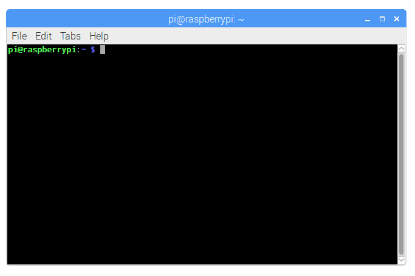

Getting Started
Your Solar Pi is a Raspberry Pi based computer. It is capable of performing many tasks a lot faster than a human and it can do almost anything you want, if you know how to program it. We aim to teach you how to use a computer and how to code, as it'll give you many more skills.
Good luck, and we hope that you enjoy using your Solar Pi!
Input
Touchscreen
Your Solar Pi has a touchscreen. This means that you can use your finger to touch the screen and control the computer. You can press buttons, access menus and look through this documentation. Also, you can use the on screen keyboard by clicking on the icon in the toolbar at the top of the screen.
Keyboard & Trackpad
You can also use a keyboard and trackpad. This makes it easier to use your Solar Pi when typing a lot or doing tasks that can't be done with the touchscreen.
To use it, press the buttons on the keyboard to get the letters and numbers you want, and drag your finger around the trackpad to move the cursor (the black pointer). To click, tap on the trackpad, or press down on the bottom left area. You can also right click, by pressing down on the bottom right of the touchpad. This will bring up an additional menu.
You will need to regularly charge your keyboard, and this can be done my plugging it into one of your Solar Pi's USB ports.
Raspbian
Raspbian is the operating system install on your Solar Pi. Without it, the Solar Pi wouldn't be able to do very much.
The Raspbian Desktop
This is the Desktop - it is what you see when you first use the computer. It has a picture as a background, and a bar at the top. There may be also be icons located on the background image. There are icons that sit on the desktop. You can make shortcuts to different programs, or you can save files here.
The button at the top left has the Raspberry Pi logo on it. This is the Applications Menu. From here, you can launch different apps and use them. The bar at the top has some shortcuts to some commonly used programs such as Chromium, the file browser and the Terminal. Apps that are already open will appear next to them in a rectangular box.
File Manager
The default file manager for Raspbian is PCmanFM. This has the icon that looks like an open yellow folder. With this, you can browse the files on the system.
Raspbian uses a filesystem to store all of the data in the computer. You can think of the filesystem as an upside-down tree. The 'root' of the tree is a single point, so in the filesystem, the root is /. The file path of the next folder could be /folder1, and the one after could be /folder1/folder2.
All the files will branch out, each with its own unique path. For example, your Documents folder has this file path: /home/pi/Documents. This tells you exactly where the file folder is, and is very useful. You can read more about the filesystem here.
The Terminal

The Terminal, (also known as the Command Line) is a very powerful and useful tool. You enter commands to do certain tasks, and it will do them for you. As a beginner, you don't have to use this - but as get more experience in using a computer, then you might want to give it a go. You can access it by clicking on the icon which has a black box with '>_' inside. You can see a list of Terminal commands here and you can learn more about the Terminal here.